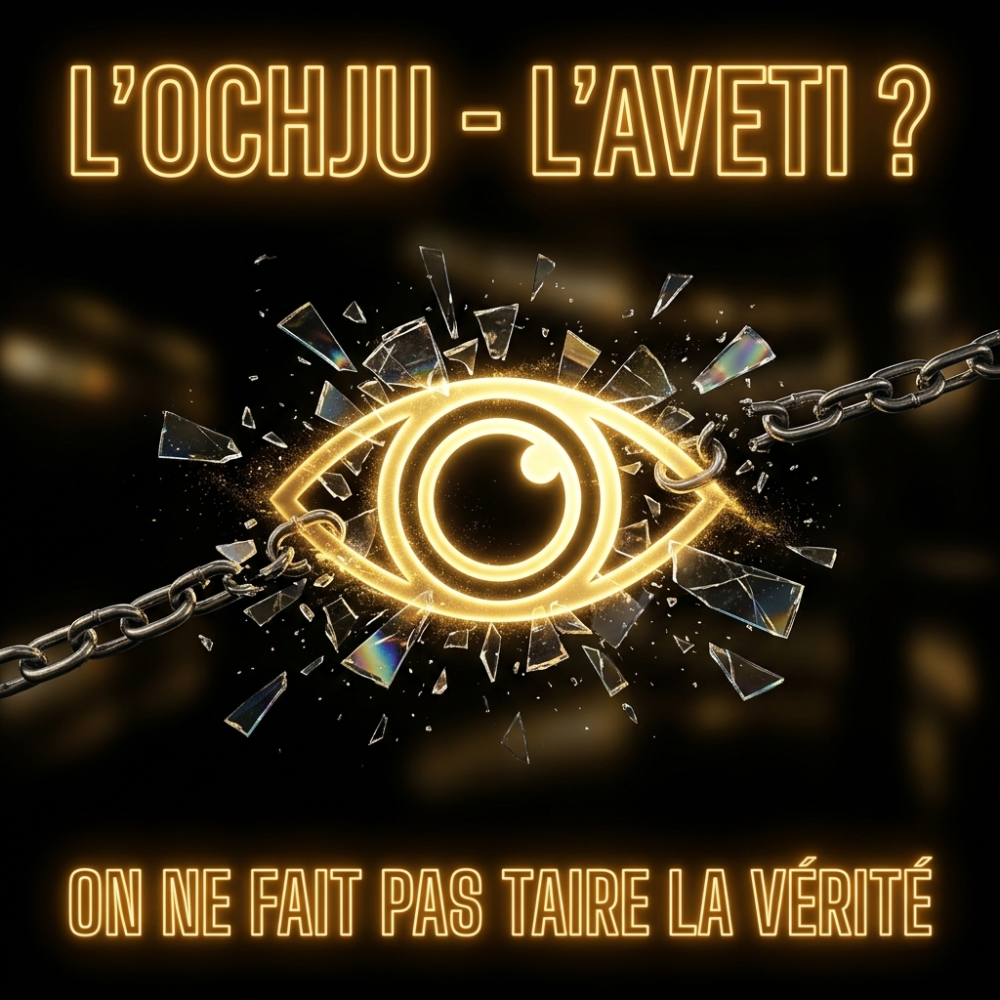

Truth will not be silenced. Become the megaphone of L’OCHJU.
Facing a historic democratic surge — +700,000 readers in a single month across our 29 forensic investigations and cadastral audits —, our social media channels are experiencing coordinated censorship attempts. The freedom to inform does not belong to private algorithms. Help us break the digital blackout by sharing this official alert across your networks.
{kind=link}
« Justice, virtue, and love of Country must be the sole engines of our actions. The Corsican People, having recovered their liberty, intend to give a lasting form to their government by founding their Constitution upon reason and truth. »
— Pasquale Paoli, Preamble to the Constitution of Corsica (November 18, 1755)
SHARED KNOWLEDGE IS OUR COUNTER-POWER
Beneath the varnish of silence, the screen lit up +700,000 times in a single month. No masters, no compromises: here is the certified truth to restore citizen sovereignty.
📜 Read the Full Manifesto Text ▼
👁️ You think these are merely articles. You believe these are just numbers aligned on a screen. Seven hundred thousand times in a month, the screen lit up. Living proof that you were waiting for only one thing: the spark of truth.
For decades, they reigned over an empire of opacity. They counted on a terrifying weapon: ignorance. They told you files were "too complex", that land was a puzzle, that water or energy were beyond your control. They lied to you.
L'OCHJU is not an opinion platform. It is a forensic rupture in their system. We combine data engineering (raw official decrees, cadastral monitoring with Bufitonu.fr, corporate ledger audits) with citizen awakening.
« Opacity is not a fatality. Shared Knowledge is our counter-power. »
The Fuel Depot Monopoly — The Forensic Autopsy of Corsica's Fuel Cartel
Why do Corsican families and local tradespeople pay 10 to 25 cents more per liter for fuel than mainland France despite enjoying a statutory 13% reduced VAT rate instead of 20%? The answer lies neither in geographical fate nor in the laws of supply and demand, but in a clandestine contractual machinery and 37 years of state complacency. Through the forensic autopsy of the 80-page Antitrust Decision 25-D-07, sworn admissions in unsealed court records, and an empirical database of 191,000 citizen price logs, here is the full investigation into an oil cartel extracting €48 million a year while locking down the island from rural service stations to commercial airports.

The Secret Mining Cadastre & The IRM Plan — The Concealed Subsoil Riches of Corsica
Historically portrayed as devoid of significant geological wealth, Corsica's schist and granite basement actually hosts critical mineral deposits (antimony, copper, asbestos, rare earth elements). An investigation into discreet state exploration campaigns and concessions granted in defiance of municipal land autonomy.

The 420 Million Euro Hold-Up — The Final Collapse of the Subsidy Myth
While public debate frequently depicts Corsica as dependent on national subsidies, official public finance data shows a different reality: each year, the central government collects approximately 1.45 billion euros from the island (VAT, fuel taxes, income tax) while returning approximately 1.03 billion in grants and direct public services. According to L'OCHJU's financial modeling cross-referencing corporate tax data, municipal balance sheets, and French Senate findings, an estimated net surplus of around 420 million euros per year flows to the central budget without being reinjected locally—representing roughly 1,200 € per resident across the island's 355,000 population.

The Universal Land Manifesto — How Mediterranean & World Islands Protect Their Soil (And Why France Forbids It to Corsica)
For a young Corsican today, buying a home on ancestral soil has become a mathematical impossibility. Why? Because 500 million Europeans and speculative financial holdings are permitted to speculate without restriction on our coastline. When Corsica demands a resident status to reserve land access for those who live and work here, Paris repeats its refrain: 'It is unconstitutional and contrary to European law.' This is an unmitigated state lie. From the Baltic to the Mediterranean, from the Pacific to the Swiss and Austrian Alps, European treaties and French constitutional law already protect the land of many peoples. Here is the comprehensive evidentiary file, documented item by item, to arm our land.

Corsica, Global Laboratory of Emancipation — The 175 Million m³ Plan Breaking Tutelage & Freeing the Island Through Water
Historically celebrated as the water tower of the Mediterranean due to its snow-capped peaks and 4,000 kilometers of rivers, Corsica faces severe prefectoral drinking water restrictions every single summer. Behind the official discourse of climate change, forensic auditing of OEHC hydrological reports, national SISPEA registers, Bufitonu.fr urban planning maps, and Public Service Delegation (DSP) contracts reveals a triple management scandal: 80% to 85% of rainwater flows directly into the sea without being stored, aggravated by ground artificialization, while out of the captured volumes, 42 million m³ of treated drinking water evaporates into the ground each year through crumbling pipes left unmaintained by private multinational cartels.

When the Sea Ceases to Sing — Autopsy of the Extinction of Corsican Fishermen & The Plunder of Our Sea
With more than 1,000 kilometers of coastline, Corsica should offer its children the freshest and most affordable fish in the Mediterranean. The reality is a governance scandal: a fuel storage cartel sanctioned with 187.5 M€ by the Competition Authority locked down insular logistics, while mounting operating costs triggered the union ultimatum of August 18, 2026 threatening to blockade the island's ports. At the same time, the vast majority of bluefin tuna and swordfish is captured by large outside fleets, while our lobsters and sea urchins face poaching pressure. Here is the material evidence of an organized shipwreck and the roadmap to reclaim maritime sovereignty.

🟢 Major Concluded Investigations (10)
Investigations backed by audited financial statements, forensic documentation and verified public records.
Manifesto from Corte to Philadelphia — An Appeal to Free Nations
Before the Liberty Bell rang in Philadelphia, before Enlightenment philosophers concluded their treaties in Parisian salons, a Mediterranean nation promulgated the very first written democratic Constitution of the modern world, granting voting rights to women one hundred and sixty-five years before America. Twenty years later, George Washington's army forged its first immortal battle cry in the blood of Pennsylvania: « Remember Paoli ! ». Today, facing a central state that organizes the erasure of our language and the confiscation of our land, Corsica does not come to beg for subsidies: it bears witness before humanity and appeals to the conscience of free nations.
The 420 Million Euro Hold-Up — The Final Collapse of the Subsidy Myth
While public debate frequently depicts Corsica as dependent on national subsidies, official public finance data shows a different reality: each year, the central government collects approximately 1.45 billion euros from the island (VAT, fuel taxes, income tax) while returning approximately 1.03 billion in grants and direct public services. According to L'OCHJU's financial modeling cross-referencing corporate tax data, municipal balance sheets, and French Senate findings, an estimated net surplus of around 420 million euros per year flows to the central budget without being reinjected locally—representing roughly 1,200 € per resident across the island's 355,000 population.
The Universal Land Manifesto — How Mediterranean & World Islands Protect Their Soil (And Why France Forbids It to Corsica)
For a young Corsican today, buying a home on ancestral soil has become a mathematical impossibility. Why? Because 500 million Europeans and speculative financial holdings are permitted to speculate without restriction on our coastline. When Corsica demands a resident status to reserve land access for those who live and work here, Paris repeats its refrain: 'It is unconstitutional and contrary to European law.' This is an unmitigated state lie. From the Baltic to the Mediterranean, from the Pacific to the Swiss and Austrian Alps, European treaties and French constitutional law already protect the land of many peoples. Here is the comprehensive evidentiary file, documented item by item, to arm our land.
Corsica, Global Laboratory of Emancipation — The 175 Million m³ Plan Breaking Tutelage & Freeing the Island Through Water
Historically celebrated as the water tower of the Mediterranean due to its snow-capped peaks and 4,000 kilometers of rivers, Corsica faces severe prefectoral drinking water restrictions every single summer. Behind the official discourse of climate change, forensic auditing of OEHC hydrological reports, national SISPEA registers, Bufitonu.fr urban planning maps, and Public Service Delegation (DSP) contracts reveals a triple management scandal: 80% to 85% of rainwater flows directly into the sea without being stored, aggravated by ground artificialization, while out of the captured volumes, 42 million m³ of treated drinking water evaporates into the ground each year through crumbling pipes left unmaintained by private multinational cartels.
When the Sea Ceases to Sing — Autopsy of the Extinction of Corsican Fishermen & The Plunder of Our Sea
With more than 1,000 kilometers of coastline, Corsica should offer its children the freshest and most affordable fish in the Mediterranean. The reality is a governance scandal: a fuel storage cartel sanctioned with 187.5 M€ by the Competition Authority locked down insular logistics, while mounting operating costs triggered the union ultimatum of August 18, 2026 threatening to blockade the island's ports. At the same time, the vast majority of bluefin tuna and swordfish is captured by large outside fleets, while our lobsters and sea urchins face poaching pressure. Here is the material evidence of an organized shipwreck and the roadmap to reclaim maritime sovereignty.
The Secret Mining Cadastre & The IRM Plan — The Concealed Subsoil Riches of Corsica
Historically portrayed as devoid of significant geological wealth, Corsica's schist and granite basement actually hosts critical mineral deposits (antimony, copper, asbestos, rare earth elements). An investigation into discreet state exploration campaigns and concessions granted in defiance of municipal land autonomy.
The Stolen Light — Breaking the Energy Monopoly Illusion
Look at our mountains: Corsica possesses extraordinary hydroelectric and solar potential in the Mediterranean. Yet, 355,000 residents endure an island electricity mix far more carbon-intensive than the interconnected mainland grid, alongside significant atmospheric emissions. Why? Because the national regulatory framework perpetuates a centralized thermal model: major hydroelectric dams (~194 to 199 MW) are maintained under State concessions outside direct territorial jurisdiction under Article L. 4424-39 of the CGCT, photovoltaic injection is capped by the 30% intermittency threshold, and the Ricanto power plant project (133.7 MW running on bioliquid, with a projected capital expenditure of nearly €800M) commits national solidarity to a projected CSPE surcharge of approximately €6.3 billion over 25 years with remuneration regulated by the CRE (Deliberations 2024-67 and 2024-138, baseline WACC at ~9.55%). Forensic breakdown of an avoidable dependency.
The Fuel Depot Monopoly — The Forensic Autopsy of Corsica's Fuel Cartel
Why do Corsican families and local tradespeople pay 10 to 25 cents more per liter for fuel than mainland France despite enjoying a statutory 13% reduced VAT rate instead of 20%? The answer lies neither in geographical fate nor in the laws of supply and demand, but in a clandestine contractual machinery and 37 years of state complacency. Through the forensic autopsy of the 80-page Antitrust Decision 25-D-07, sworn admissions in unsealed court records, and an empirical database of 191,000 citizen price logs, here is the full investigation into an oil cartel extracting €48 million a year while locking down the island from rural service stations to commercial airports.
The 'Angelo' Urban Cable Car (Part 1/2) — The Financial Mirage & The Private Operating Annuity
Inaugurated in October 2025 to connect Saint-Joseph to Mezzavia, the 'Angelo' urban cable car represents €38.26 million in construction costs and €23.89 million in operation and maintenance over ten years. Forensic examination of the prefectoral DUP registers, the official angelo.corsica portal, and the CAPA 2025 Budgetary Orientation Report (ROB) reveals a telling model : an investment 70% funded by the PTIC (central state) supplemented by ERDF European funds, yet burdened with a structural operating deficit guaranteed to a private consortium while the historic public bus network faces severe austerity.
The Fate of Muvitarra (Part 2/2) — The Mechanics of Asphyxiation, The August 31 Deadline & The Sovereign Rescue Plan
While the first part of our investigation exposed the 52 M€ financial annuity of the 'Angelo' cable car conceded to private industrial giant POMA, forensic cross-auditing of financial statements, corporate tax filings, and the DREAL prefectoral formal notice highlights the mechanisms of structural weakening. By maintaining SPL Muvitarra in chronic budget strangulation — 2.9 M€ in unregularized services, a contract stretched across 11 successive amendments, 25.9 M€ of debt absorbed by the cable car, and a Muvimare sea shuttle funded by Ajaccio for the benefit of an external municipality —, the urban community deliberately weakens its historical operator. Just 7 days before the expiration of the Public Service Obligations Contract (COSP) set for August 31, no new contract has been signed, leaving the threat of an absolute legal vacuum on September 1. Here are the sealed records.
🟡 Active Citizen Inquiries (19)
Ongoing investigations: do you hold official documents, regulatory records, or verifiable evidence? Submit them securely via our PGP vault.

The Great Financial Lock — The Secret Mechanics of Offshore Mortgage Dispossession
While local resident families face systematic mortgage rejections under the rigid 35% debt-to-income ceiling enforced by French banking authorities, mainland private holdings and offshore entities raise tens of millions of euros through asset-backed pledges. A forensic investigation into the structural banking asymmetry that chokes local youth and sanctifies real estate speculation.

The Offshore SCI Empire — The Opaque Takeover of the Corsican Coastline
Behind the closed shutters of seaside luxury villas lining the island coastline lies a calculated architecture of non-resident real estate companies (SCI). Leveraging open data from the French Beneficial Ownership Register (RBE), we reveal the true scale of offshore land capture.

The Plunder of the Corsican Forest & Raw Timber Exportation
Home to legendary forests of Laricio pine, holm oak, and sweet chestnut (Vizzavona, Marmano, Bavella, Tartagine), Corsica is witnessing the systematic extraction of its forest wealth. Thousands of cubic meters of prime timber are felled and exported as raw unworked logs to the mainland and Italy without any industrial value creation on the island.

The Capital Flight of the Tourism Season — The Drain of Island Added Value
Presented as the undisputed engine of the Corsican economy, tourism generates billions of euros in summer turnover. However, forensic financial auditing of money flows demonstrates that over 65% of this generated value immediately leaves the island at the close of the season.

The Tutelage of Senior Civil Service & Administrative Churn
Subjected to state over-administration and local executive paralysis, Corsica suffers from the continuous rotation of Parisian senior civil servants using the island as a temporary career stepping stone. An investigation into delayed infrastructure files and the refusal to cultivate autonomous insular governance.

The Confiscated Sanctuary — The 3 Hidden Levers of the Military Cadastre & The 2,800-Hectare Retrocession Plan Liberating Corsica
While Corsica suffocates under an unprecedented housing crisis, agricultural land scarcity, and municipal financial asphyxiation, the French state sanctuarizes over 2,800 hectares of prime coastal land under the exclusive control of the Ministry of Armed Forces. Forensic analysis of the General Table of State Real Estate Properties (TGPIE), public defense easements (SUP PM1/PM2/PT2), the BASOL contaminated sites database, and cadastre data analyzed with partner Bufitonu.fr reveals the 3 hidden secrets of the insular military enclave: derisory concession fees paid by foreign NATO air forces to strafe our coastline, secret priority pumping of 40,000 m³ of drinking water from the Travo aquifer during summer droughts, and unaddressed toxic soil contamination with F-34 jet fuel and heavy metals. Demonstration of the Sovereign Retrocession Plan validated by an exceptional IFTS score of 91.4 / 100.

Healthcare Dependence & The Cost of Hospital Under-Equipment
As the only metropolitan territory completely deprived of a fully-fledged University Hospital Center (CHU), Corsica suffers from chronic healthcare under-equipment. An investigation into the human and financial cost of 25,000 annual medical evacuations (EVASAN) to Marseille and Nice, expensively financed by insular health insurance funds.

Educational Under-Investment & The University of Corsica
Founded in 1765 by Pasquale Paoli and reopened in 1981 through popular struggle, the University of Corsica in Corte is the intellectual heart of island youth. Yet, it suffers from chronic under-investment by the Ministry of Higher Education.

Judicial Dispossession & Extraterritorial Justice
In criminal justice matters, Corsica is subjected to a permanent regime of exception. Under the pretext of combating organized crime, virtually all complex investigative files are stripped from the courts of Bastia and Ajaccio and transferred to the Specialized Interregional Jurisdiction (JIRS) in Marseille.

Legality Control & The Censorship of Local Municipal Deliberations
Theoretical guarantors of legality control over local government decisions, prefectoral services in Corsica enforce a two-tier administrative justice system. An investigation into the systematic censorship of small rural village decrees versus the leniency granted to questionable mega-projects on the coastline.

The Continuity of the Miot Decrees & Land Indivision
Enacted in 1798 by Count André-François Miot de Melito to adapt inheritance law to the realities of Corsican family land tenure, the Miot Decrees have been progressively dismantled by the French Legislature. An investigation into the land indivision trap and the vital role of GIRTEC.

The European Charter Lock & The Right to the Corsican Language
As the mother tongue of a people and the vehicle of its history and intangible heritage (oral tradition, paghjelle, toponymy), Corsican is suffering accelerated linguistic erosion. An investigation into the state's refusal to grant co-official status and establish universal immersive bilingual education.

Digital Dependence & Threats to Data Sovereignty
Entirely dependent on three subsea fiber optic cables connecting the island to the mainland, Corsica suffers from extreme digital fragility. An investigation into the transfer of public, cadastral, and health records of Corsican residents to mainland and American datacenters.

The CAP Subsidy Capture & Speculative Pastoralism
Intended to support working farmers and maintain traditional pastoralism, European Common Agricultural Policy (CAP) subsidies in Corsica have been widely captured by speculative interests. An investigation into « subsidy hunters » and the destabilization of genuine island agriculture.

The Waste Crisis & The Cost of Landfill Saturation — The Island Environmental Deadlock
Facing the complete saturation of the island's few landfill centers (Tallone, Viggianello, Prunelli-di-Fiumorbo), Corsica is trapped in a first-order environmental and financial crisis. An investigation into the failure of source-separated recycling and the exorbitant cost of exporting household waste via maritime cargo ships.

Banking Capture & The Flight of Insular Savings Deposits
Considered by major French banking cartels as an exceptionally profitable deposit collection basin, Corsica suffers from chronic local credit rationing. An investigation into the siphoning of family savings books and deposits toward Parisian financial markets.

Civil Protection Under-Funding & Major Risk Preparedness
A mountainous Mediterranean territory subjected to extreme summer droughts and violent winter storms, Corsica faces severe natural hazards (wildfires, flash floods, mountain avalanches). An investigation into the chronic under-sizing of ground and aerial emergency rescue assets.

The Urban Planning Radar & Tacit Building Permits
To avoid court challenges from environmental defense groups and neighbor opposition, a growing share of speculative real estate projects along the Corsican coastline are born through the legal loophole of tacit building permits. An investigation into the exploitation of Urban Planning Code flaws using land data from Bufitonu.fr.

Petitioner Transparency & Environmental Impact Assessments
To bypass mandatory environmental impact assessments before the Regional Environmental Authority Mission (MRAe), certain developers utilize project 'salami-slicing' (fractionation). An investigation into unmasking true beneficial owners behind corporate planning vehicles.
🗺️ Cartographie & Action Citoyenne Intercommunale
🏛️ CAPA (Pays Ajaccien)
Communauté d’AgglomérationAjaccio, Afa, Alata, Appietto, Bastelicaccia, Sarrola-Carcopino, Tavaco, Peri, Cuttoli, Villeneuve.
🤝 Real Estate Transactions & Land Valuation Radar (360 Communes)
💡 Why consult the official DVF (Land Value Requests) registry?
This official French Treasury (DGFiP) registry records every authenticated property and land sale completed in Corsica. It allows citizens to detect real estate speculation, massive acquisitions by non-resident corporate holdings, and compare real square-meter prices against local household incomes across all 360 municipalities.
⚖️ Demand Public Records — The Citizen Right-to-Know
💡 What is the "Citizen Right to Know"?
Under French and European public transparency law, no mayor, prefect, or public utility director can conceal public documents (budgets, building permits, water contracts, council deliberations). Every citizen has the strict legal right to demand unredacted copies. If an agency refuses, the official statutory watchdog is the CADA (Commission on Access to Administrative Documents). Use this tool to generate your legal notice in 10 seconds.
🔒 Whistleblower Vault & Cryptographic Evidence Drop
Are you a civil servant, municipal technician, construction engineer, or citizen in possession of official records documenting land corruption, unpermitted coastal building, or the embezzlement of public funds?
fsucieta@tutamail.com.